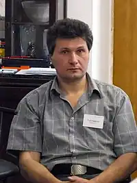

20.10.1969, м. Кременчук, Полтавська обл.
Радутний Радій Володимирович – сучасний український письменник-фантаст.
1997 року закінчив Харківський авіаційний інститут. Живе і працює в Києві, редактор журналу "Український фантастичний оглядач". Працює в жанрі наукової, бойової та космічної фантастики з елементами філософії. Технічна освіта і специфічні знання роблять твори Радутного реалістичними і атмосферними. Радій Володимирович створив чимало успішних робіт, які були опубліковані в збірниках "Первый удар", "Настоящая фантастика – 2012", "Мастер своего дела", "Драконы никогда не спят", "Любви все роботы покорны". Письменник віддає перевагу малим формам. У коротких, але ємких оповіданнях він розмірковує про майбутнє нашої планети, історичні події та їх наслідки, про космічні подорожі і міжгалактичні битви. Пише оповідання українською та російською мовами: "Три життя про запас" (2003 р.), "Мозаика странной войны" (2004 р.), "Три тисячі смертей" (2005 р.), "Металом об метал" (2006 р.), "Важка чоловіча робота" (2012 р.), "Поджигатели странной войны" (2014 р.), "Темна синя вода. Джерело" (2016 р.), "Темна синя вода. Струмок" (2017 р.), "Темна синя вода. Потік" (2018 р.).